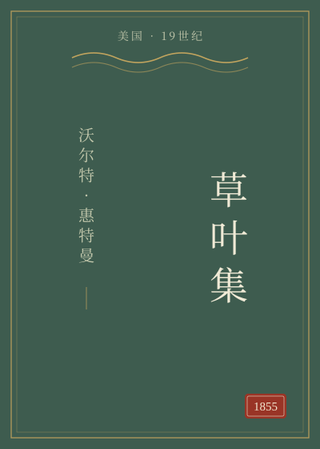
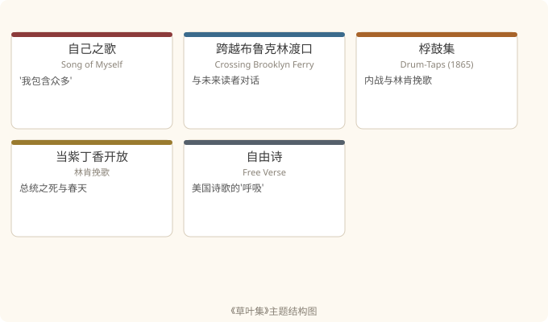

草叶集
一、基本信息
| 作者 | 惠特曼 |
|---|---|
| 成书/出版 | 1855年第一版自费出版；一生出九版（Britannica） Walt Whitman — Encyclopaedia Britannica（百科全书） |
| 国别/地区 | 美国 |
| 时代 | 近代 · 19世纪 |
| 体裁 | 诗集（九版终身修订） |
| 语言 | 英语 |

二、创作背景
自费出版：1855年（卖房筹资——Britannica：sold a house to fund it）；一生修订扩展出九版（Britannica：He revised and expanded it throughout his life, ultimately producing nine editions）——'生命的书'。
争议：'free verse and controversial subject matter, earning little acclaim during his lifetime'（自由诗与争议题材、生前少有好评——Britannica）；1865年因'不体面'被内政部解雇（Britannica）。
爱默生赞（Britannica）：'the most extraordinary piece of wit and wisdom' America had produced（美国贡献的最非凡的智慧与机智之作——Britannica）。
三、内容脉络
《自己之歌》：'我赞美我自己，歌唱我自己'（原文，公有领域）——开篇的'自我'宣言；《 Song of Myself》全篇52节（通说待核）。
《 crossing Brooklyn Ferry》：跨越时间与读者对话（通说）；《 Out of the Cradle Endlessly Rocking》：鸟与海的诗（通说）。
内战诗：《桴鼓集》（1865）与续编（Britannica：His war poems appeared in Drum-Taps (May 1865) and Sequel to Drum-Taps）——含林肯挽歌《当紫丁香最近在庭院中开放时》（Britannica 列举）。
四、主要人物表
| 人物 | 身份 | 说明 |
|---|---|---|
| '我'（Walt Whitman） | 诗人·民主的自我 | '我包含众多'（I contain multitudes——原文，公有领域） |
| 读者 | '未来的你' | 跨越时间的对话者 |
五、主题与艺术特点
- 民主的自我：'自我'与'众生'的合一（通说）。
- 身体的赞美：性、器官、死亡——'争议题材'（Britannica：controversial subject matter）。
- 自由诗的开创：无韵律但有'呼吸'（通说）。
- 艺术特点：catalogue 排比、长句的潮汐、'呼语'（通说）。
六、影响与评论
- Britannica（Whitman 条）：'a symbol of American democracy whose verse style and challenge to convention reshaped American literature'（美国民主的象征——重塑美国文学）。
Walt Whitman — Encyclopaedia Britannica（百科全书） - Britannica：爱默生'最非凡的智慧与机智'评语。
Walt Whitman — Encyclopaedia Britannica（百科全书） - 世界影响：影响鲁迅《野草》？——不，影响聂鲁达/帕斯/希梅内斯与中文'自由诗'（通说待核）。
Walt Whitman — Encyclopaedia Britannica（百科全书） - 中译：赵萝蕤译《草叶集》（人民文学/上海译文，通说待核）。
Walt Whitman — Encyclopaedia Britannica（百科全书）
七、阅读建议
- 自由诗的'节奏'——需要朗读。
- catalogue 的列举——理解其'民主'意义。
- 不同版本的差异——版本学。
- 赵萝蕤译《草叶集》（人民文学出版社，通说待核）。
- 李野光译本（通说待核）。
- 英文本：Leaves of Grass（1855 deathbed ed. / Norton Critical——通说待核）。
先读《自己之歌》→ 《 crossing Brooklyn Ferry》→ 内战诗（《桴鼓集》）→ '死亡'诗组。
八、待核实
- 1855年7月4日 Brooklyn 初版（795册说，通称）待核。
- 赵萝蕤译本信息待核。
- 'I celebrate myself'开篇逐字核对。
- 九版演变的年份表待核。
本页主要来源
惠特曼的其他收录作品：草叶集